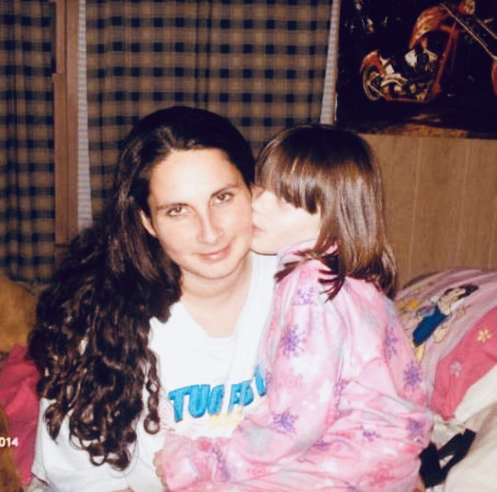
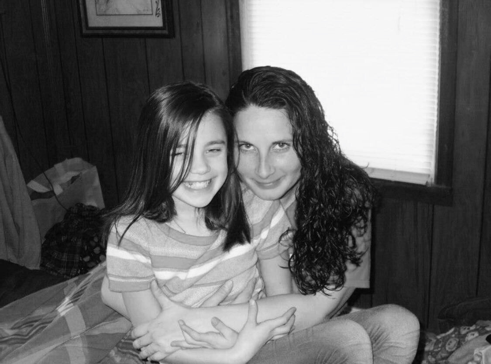

Discription:
Lost Years is a story I wrote and it is all about the time we have either lucked out or miss out on. Life is all about the experiences and adventures we make. Sadly in society many don't get the chance to experience all the good, but yet experience all the upsetting parts of life. The struggles of life through the young eyes.
I wrote this expressing my feelings growing up as I was younger. How I struggled on things, but also how I delt with them. I love writing and I enjoy making people feel through my writing. I want my readers to not only feel but become hooked on what they're reading. I was very passionate with this piece and decided to share some of the chapters.
"Timing."
I've seen many things through out my 15 years of being on this earth and what you're thinking won't amount to my messy life. Now don't get me wrong life has the highest of the highs but the lowest of the lows. I feel as though I've been stuck in the lowest of the lows my whole life as I'll describe in these chapters. Life hasn't been treating me well lately and everyone says "As long as you stay positive, Life treats you great." I'm still questioning that because no matter what outlook on life I've had, it's be quite disappointing. I've pondered a lot about my parents and how I came into this world. It all comes back to timing, they met at the wrong time and it wasn't meant to be. They brought me into the world with no plans, these two young selfish souls. Like no other broken love story one walks out which was my father. Although my mom did push him away, but you can't blame this right? They were simply just too young.
The beginning of my childhood years was most likely the best. My mothers love was so pure, she was my angel. Due to addiction she became someone I didn't recognize. She became full of hatred and sadness seemed to overwhelmed her. She was simply a sad soul and lost with a kid which didn't make her situation any better. She could barely take care of herself let alone another human being with absolute no help. Throughout growing up I watched her struggle more and more. She just looked as though she was tired of life, just numb. I was too young to understand. She became even more angry as she started to take it out on me. She found the joy in pain; feeling something she couldn't anymore.
"Patience."
As I start experiencing my own struggles I've learned life can be complicated, it throws you many ups and downs. Although things truly take time and you have to be patient through the rough patches. I fell into a dark phase and lost myself in the mists of all of it. Some stay in the rut of it all and can't save themselves, I was so close. I tried to find interest in things that filled up my wounds for the time being until my problems surfaced once again. I didn't allow myself to face them because I felt so low that I couldn't handle it. We all find ourselves falling deep into our own tears. As each tear finds their way down my cheek; as I reflect each memory that caused those tears. The feeling of overwhelming sadness teaches us our strength, struggles and confidence. As the feeling of loneliness makes me feel at peace. I found comfort, where comfort should not be found. I let myself allow toxins into my mind because I felt nothing at all and was in need to feel something willingly accepting the consequences.
As running low we start to push ourselves away from the love we actually deserve. Which escalates making worse decisions that do not benefit our well being. As we hate being in our own skin that leads into hating our own reflection, going in deeper despising our whole well being. Sadly, all we have to blame is ourselves. Which made me experience to fall deeper into sadness because I let myself cause this pain in my heart. Little by little tearing ourselves apart more and more making it harder to get back up. As I began to lose patience for things getting better, I chose the easier solution to give up and lose hope; making the road to happiness harder. As I struggled with my own demons slowly taking over, I forgot what I still had going good. Dwelling on just the bad, finding little room for the happy thoughts; Losing interest in things that use to make myself the happiest.
"Effort."
As I deal with my struggles I had to put forward a good amount of effort. Dealing with our demons isn't easy and hard to keep under control. When we hit rock bottom and feel hopeless we tend to not put effort in ourselves. We start caring less about how we present ourselves. We don't try so hard because we simply just don't care about anything in general. Leading to the road to happiness is an obstacle after we give up, because we don't try to reach the point. We simply don't see a point anymore. Learning from my mother, I saw her give up on herself many times. I noticed as she completely let herself go, she shortly let others go as well. When you lose effort you put yourself in a very distant spot. We distant ourselves so much we ponder on who we are anymore. Puzzled how we came upon this dark, lonely and broken spot.
When you travel this dark place in your mind; feeling no escape. As we have no one to relate to the pain we feel on a daily. Feeling so alone, no one to talk to and yet no one to go to because we push them all away. We tend to get more sad knowing that we are the reason no one is there for us. We start little by little realizing the mornings get harder, we struggle with waking up or even getting out of bed. Losing effort makes us feel tired, exhuasted of life as though the life was sucked out of us. I started to sleep more, to where it was healthy but it was an escape from life. It was like putting life on pause; an escape from reality. It felt as though dying without the commitment. I've learned you can sleep so much but yet still feel so tired, sleep cannot fix a soul that is that tired.